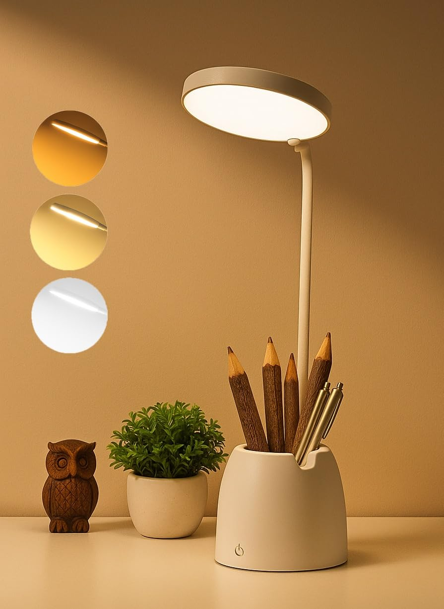

Shared guide
The fastest way to make a setup look intentional on camera — and the difference between a late study session that feels harsh versus one you can actually sit through.
Also featured on: Home Office on a Budget · Desk Setup Ideas
Overhead room lights flatten faces on video calls and bounce off screens. A small lamp at the desk, plus something behind the monitor if you have one, does more for “this looks like a real workspace” than another organizer.

Best for: small desks where a lamp, pen holder, and phone stand all need to share one footprint
Three touch-controlled light modes cover the range from focused reading to soft bedside use, and the base doubles as a pen stand and phone holder — genuinely useful on a desk with no room to spare for three separate objects. USB rechargeable, so it isn't tied to an outlet either.
Check price on AmazonBest for: anyone doing video calls or late work sessions
Swaps out harsh overhead light for something warmer — makes the whole desk area look considered instead of thrown together. Look for a dimmer and a head that actually aims at the page, not the ceiling.
Check price on AmazonBest for: dual-purpose desks where a lamp base steals keyboard space
Sits on top of the screen and throws light down onto the desk without pointing at your eyes. It is the lighting version of a monitor riser: it uses space you already spent on the display.
Check price on AmazonBest for: evening screen work in a dark room
A short strip on the back of a monitor that lights the wall behind it. Your eyes stop fighting a bright rectangle in a black room, and video-call backgrounds look less like a cave.
Check price on AmazonBest for: dorm shelves, headboards, and desks with no spare surface
Clips to a shelf or headboard when the desk is already full. Useful for reading without turning on the whole room — and it packs smaller than a proper lamp if you move twice a year.
Check price on AmazonIf your desk is small, start with the SaleOn lamp — it solves lighting, pen storage, and phone propping in one object. If you already have those covered and just need better light, a plain dimmable warm desk lamp does the job. The monitor bar and bias strip are good second steps once the main pool of light is under control.
Save this for later
Pin this post →